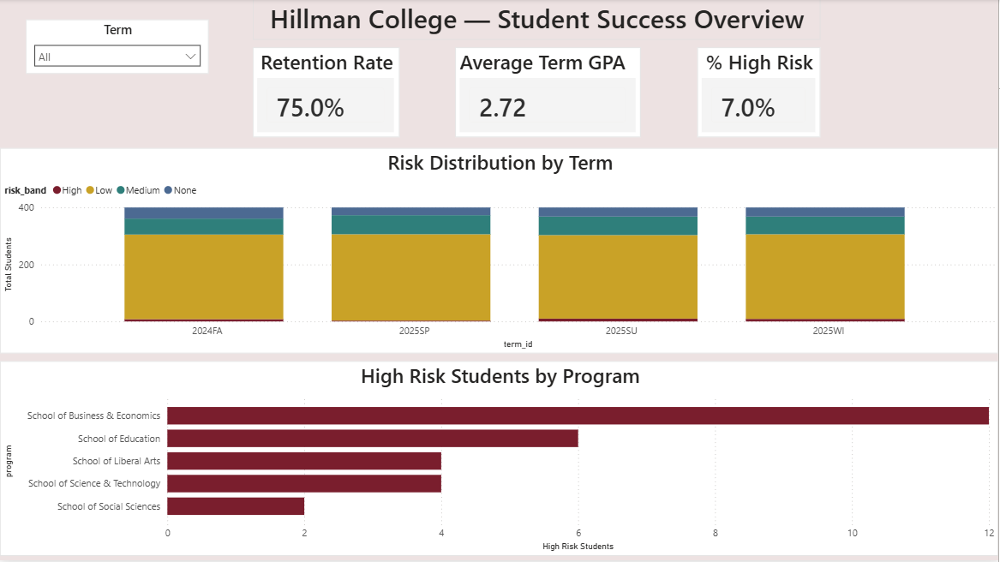
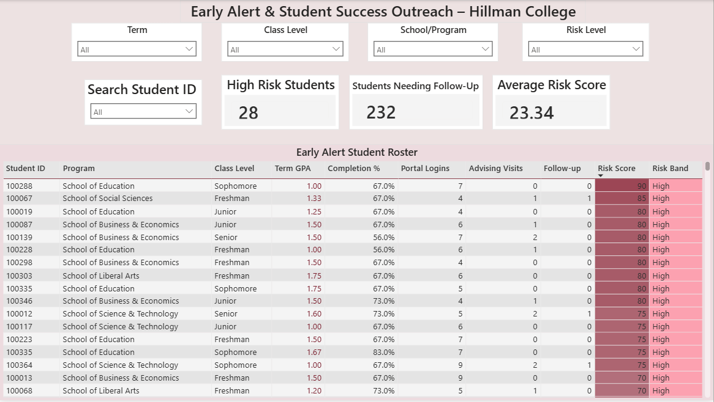
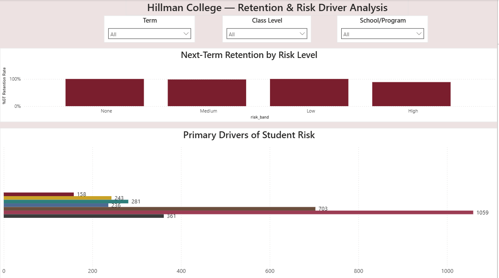
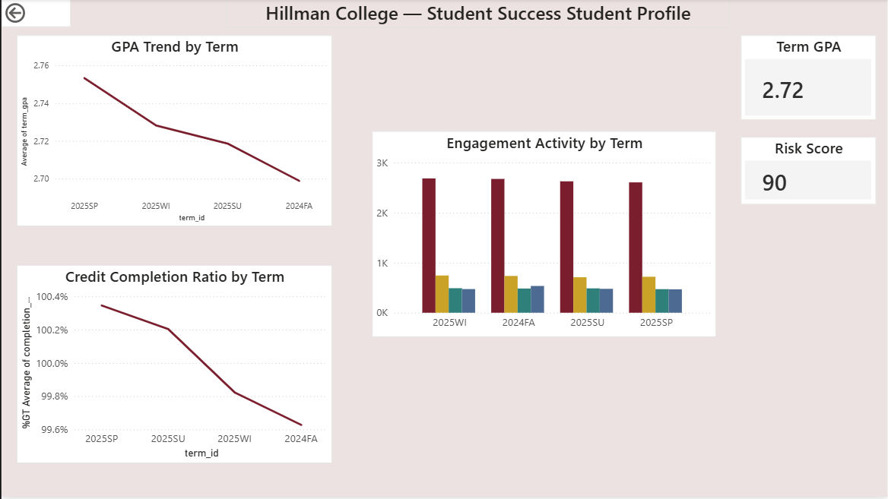

Hillman College Student Success & Early Alert Analytics
Multi-page Power BI analytics platform for retention, early alert, and institutional research insights
This project analyzes synthetic student data using SQL-modeled tables and Power BI dashboards to support early identification of at-risk students, retention analysis, and data-informed student success initiatives for a higher education institution.
🎯 The Challenge
Universities collect large volumes of student data across academic systems, advising platforms, and engagement tools. However, this information is often siloed, making it difficult to identify risk early, understand drivers of attrition, and prioritize interventions. The goal was to design a centralized analytics framework that transforms disconnected data into actionable, stakeholder-ready insights.
🛠️ The Process
- Generated privacy-safe synthetic student, enrollment, engagement, and advising datasets using Python.
- Modeled relational tables and built a student-term analytics mart using SQL (SQLite).
- Created GPA calculations, completion ratios, retention indicators, and composite risk scores.
- Developed early alert logic using academic, engagement, and advising-based risk flags.
- Designed a four-page Power BI analytics platform for leadership, advisors, and institutional research stakeholders.
📊 Page 1 — Executive Student Success Overview
This page provides a leadership-level snapshot of institutional health, summarizing retention performance, academic trends, and high-risk population distribution.

Executive-facing institutional summary
Executive Takeaways
- Overall retention remains strong, with noticeable decline among high-risk populations.
- High-risk students represent a critical segment requiring targeted intervention.
- GPA and risk distributions highlight academic performance and engagement as monitoring priorities.
- Program-level views support strategic planning and resource allocation.
📊 Page 2 — Early Alert & Advisor Dashboard
This page supports frontline student success teams by identifying at-risk students and prioritizing outreach using composite risk scoring and dynamic filtering.

Operational early alert and outreach view
Executive Takeaways
- Composite risk scoring enables rapid triage of students needing support.
- Conditional formatting highlights academically vulnerable students.
- Advisors can filter by term, program, and class level to focus outreach.
- Roster supports drill-through access to individual student profiles.
📊 Page 3 — Retention & Risk Driver Analysis
This page evaluates how risk severity relates to retention outcomes and identifies the most prevalent contributors to student risk.

Institutional research and strategy view
Executive Takeaways
- Next-term retention declines as composite risk increases.
- Engagement and advising gaps emerge as dominant risk drivers.
- Academic performance alone does not fully explain attrition.
- Risk drivers vary across student populations.
📊 Page 4 — Student Profile (Drill-Through View)
This page enables advisors to drill into an individual student’s academic and engagement history to support case management and intervention planning.

Advisor-facing case management view
Executive Takeaways
- Longitudinal GPA and completion trends reveal early warning patterns.
- Engagement activity highlights shifts in campus connection.
- Risk indicators provide diagnostic context for advising.
- Drill-through design bridges population analytics with individual support.
🧰 Tools Used
- SQL (SQLite)
- Python (Pandas, NumPy, Faker)
- Power BI
- DAX
- Power Query
🔮 What I’d Do Next
Future enhancements could include predictive risk modeling, automated refresh pipelines, advisor workload optimization, cohort persistence tracking, and integration of SIS-style schemas (e.g., Banner-like environments).